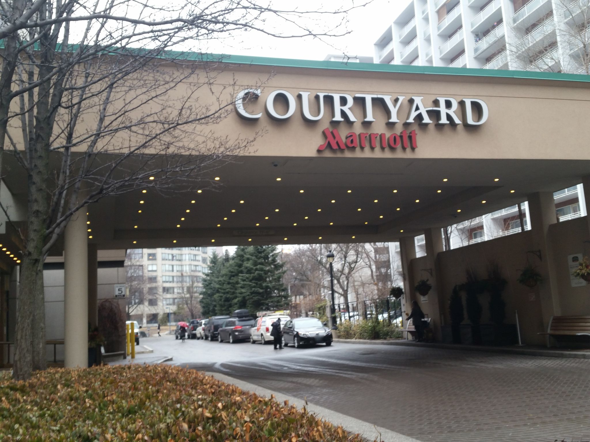

Seed
- The word COURTYARD set in a wide, slightly condensed serif — an all-caps display roman that wants to feel like a brass nameplate.
- "Marriott" beneath it in red brush script, a signature pretending to be the proprietor's hand.
- The porte-cochère's underside studded with two long rows of small downlights, a runway of dots receding into shadow.
Wander
The serif COURTYARD does a strange piece of work: it's set in a typeface that wants to belong to a small private club, but it's bolted to a building that is, structurally, an airport hotel attached to a tower. The script "Marriott" below it adds the second half of the lie — a fake autograph, the way restaurants in the 1990s would print "from the chef" in italic on a menu printed by Sysco. There's a long history of corporations leasing the visual grammar of the small to perform smallness: Pret's chalkboards, Trader Joe's nautical hand-lettering, the whole "neighborhood" pose that any chain over 200 locations adopts the moment the loyalty program launches. What's interesting isn't that this is dishonest — everyone knows — but that the *form of the dishonesty* keeps drifting downmarket. The serif-and-script lockup was prestige in 1985, parodic by 2005, and is now somewhere closer to civic furniture: it reads as "hotel" the way a green cross reads as "pharmacy," denoting a category rather than a personality. Once a typographic gesture passes through enough mouths it stops being a claim and becomes a sign — meaning the *original* claim (that this place is a courtyard, that some Marriott once signed something) has been drained out and replaced with pure indexical function. Brand semiotics likes to pretend the meaning is still in there; mostly it's a fossil. The same thing happened to the medallion on a taxi and the hand-painted "Bar" on a tabac — once-aspirational, now just the icon for the thing.
Branch
The downlight runway as a domesticated version of the airport approach-light system — arrival theater scaled down to one car at a time.
Chose B
The branding-as-fossil drift is getting comfortable; a slight angle change is more likely to surface a different surface or sign than continuing dead-on into the same porte-cochère sightline.